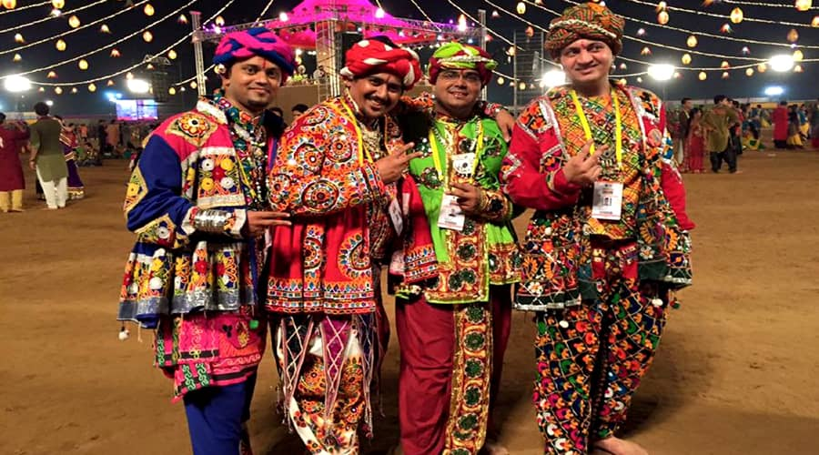

kediyu with dhoti:
The men in the image are wearing traditional Gujarati clothing, which is often brightly colored and decorated with intricate embroidery. The most common type of Gujarati men's clothing is the kediyu, a long, loose-fitting shirt that is often worn with a dhoti, a type of loincloth. The men in the image are also wearing turbans, which are a common head covering for men in Gujarat.